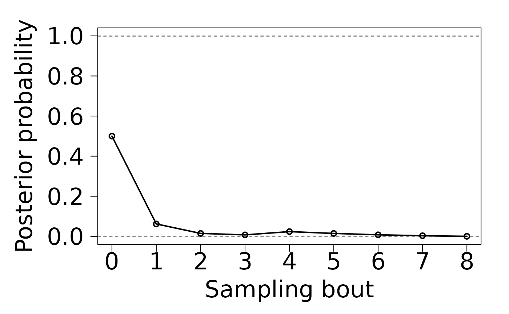

Draws a plot with the sequence of posterior probabilities from a sequential test of Bayesian posterior probabilities
Source:R/STBP-methods.R
plot-STBP-missing-method.RdMethod for signature "STBP" to display resulting probabilities.
Arguments
- x
Created as a result of a call to
stbp_simpleorstbp_composite.- y
Unused entry
Examples
# Testing the hypothesis of a sampled population being greater than trajectory H
H <- c(2, 5, 10, 20, 40, 40, 20, 10, 5, 2)
# Generating sequential samples (n = 3) from a population that is 1 below H
# (H - 1)
countP <- matrix(NA, 3, 10)
set.seed(101)
for(i in 1:10){
countP[, i] <- rpois(3, lambda = (H[i] - 1))
}
# Running STBP on the sample
test2F <- stbp_composite(data = countP,
greater_than = TRUE,
hypothesis = H,
density_func = "poisson",
prior = 0.5,
lower_bnd = 0,
upper_bnd = Inf,
lower_criterion = 0.001,
upper_criterion = 0.999)
plot(test2F)
#> Warning: NAs introduced by coercion

## End (Not run)